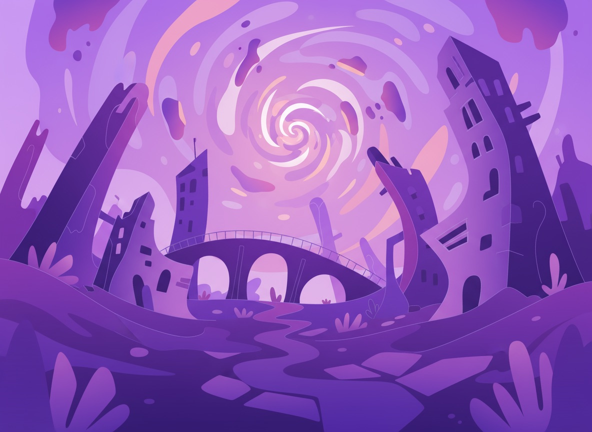
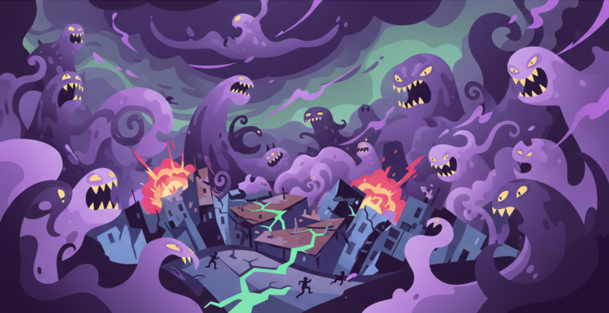
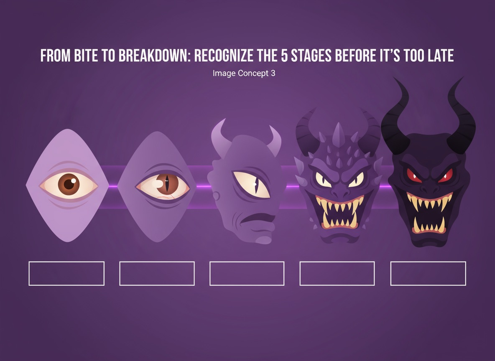
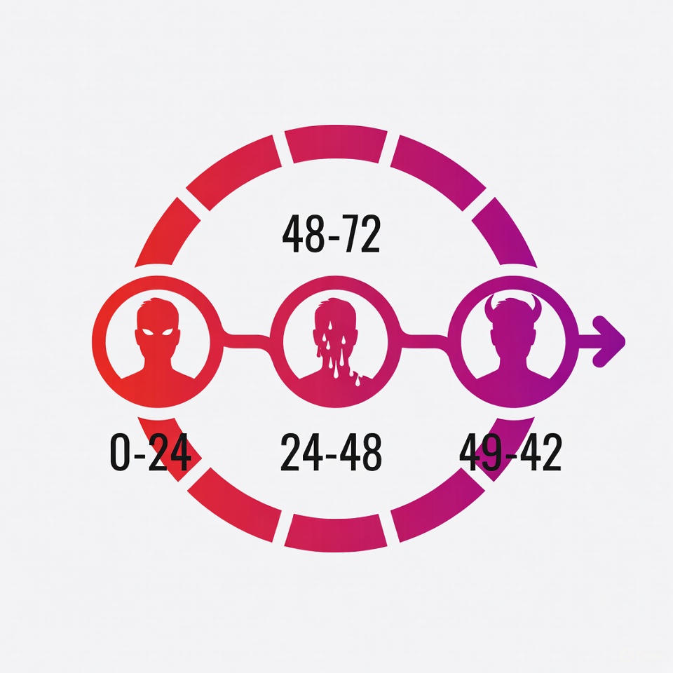

Vi tilbyder Danskerne krisehjælp under monsterkrisen

De første minutter
Hvis du har været i direkte kontakt med en zombie, gælder én
regel: Reager med det samme.
Se mere
Kontakt betyder alt fra et bid eller en rift til blot
hud-mod-hud berøring, især hvis der er åbne sår. Inden for 10
minutter bør du:
Trække dig væk fra området og undgå alle andre mennesker.
Vaske det inficerede område grundigt med sæbe, desinfektion
eller hvad end du har adgang til. Det stopper ikke
infektionen, men kan forsinke den.
Aktivere det lokale beredskab via radio, mobil eller nærmeste
alarmstation.
Sætte dig i midlertidig karantæne, helst i et aflåseligt rum.

Kontakt med et monster
Et enkelt møde med det inficerede kan koste dig mere, end du tror
- her er, hvad du skal vide.
Se mere
At komme i kontakt med en zombie eller en inficeret
monsterlignende skabning er en af de mest alvorlige risici under
den igangværende monster-apokalypse. Selv kortvarig fysisk
berøring kan være nok til at overføre den aggressive infektion,
der forvandler mennesker til aggressive, desorienterede og
ukontrollerbare individer. Derfor er det afgørende at vide
præcis, hvad du skal gøre, hvis du har mistanke om smitte - og
hvilke symptomer du skal være opmærksom på.
Fra bid til sammenbrud
Et enkelt bid, og alt, du kender, begynder at falde fra hinanden.

Når du ikke længere er alene
Fysisk afstand er altafgørende
Symptomer over tid
Herunder kan du læse om hvordan symptomerne rammer dig indenfor de
første 48 timer

Fra bid til sammenbrud: Genkend de 5 stadier før det er for sent
Infektionens begyndelse
Et bid fra en zombie eller inficeret skabning starter en kæde af
skræmmende forandringer i kroppen. Smitsomheden trænger hurtigt ind i
blodbanen og begynder at overtage kroppens normale funktioner. Hjerte,
hjerne og muskler påvirkes gradvist, hvilket fører til både fysisk og
mental nedbrydning.
Forvirring og tab af kontrol
Ofte starter det med forvirring og tab af selvkontrol, mens kroppen
langsomt reagerer på infektionen. Musklerne stivner, sanserne fordrejes,
og aggressionen vokser. Tiden mellem det første bid og den totale
overtagelse af kroppen er præget af smertefuld desperation, hvor
instinkter overtager fornuften.
Det uundgåelige sammenbrud
Til sidst mister kroppen fuldstændigt evnen til at opretholde normale
funktioner, og infektionen kulminerer i et uundgåeligt sammenbrud - en
transformation, der gør offeret til endnu en farlig del af apokalypsen.
Når du ikke længere er alene
Fysisk afstand er altafgørende
I en verden hvor infektionen kan ramme hvem som helst, er det afgørende
at forstå, at nærhed kan være farlig. Selv når du møder andre
overlevende, skal fysisk kontakt undgås til enhver pris. Infektionen
udvikler sig forskelligt fra person til person, og selv dem, der ser
sunde ud, kan pludselig udvise ukontrolleret og aggressiv adfærd.
Sikre kommunikationsmetoder
For at minimere risikoen bør kontakt mellem smittede eller potentielt
smittede ske gennem sikre kanaler: visuelle signaler, radio eller
mobiltelefon. Aldrig direkte berøring. Selv små fejltrin kan føre til
katastrofale konsekvenser, og den eneste måde at beskytte sig selv og
andre på er ved at respektere grænserne for fysisk afstand.
Strategisk overlevelse
I situationer hvor du ikke længere er alene, bliver hver interaktion en
nøje balanceret strategi - ikke kun for overlevelse, men også for at
bevare din menneskelighed midt i kaosset.
Typiske symptomer - time for time
0-12 timer efter kontakt
De første, tidlige tegn på infektion.
Varme eller prikken omkring kontaktstedet
Uforklarlig uro i kroppen
Let hovedpine
Forhøjet puls eller korte kulderystelser
Hold dig isoleret og kontakt beredskabet.
12-24 timer efter kontakt
Infektionen begynder at påvirke kroppen mere mærkbart.
Træthed og koncentrationsbesvær
Desorientering ved bevægelse
Øget kropsvarme
Uro i muskler eller små ryk
Undgå kontakt med andre - risikoen stiger.
24 - 36 timer efter kontakt
Tegnene bliver tydelige for omgivelserne.
Grålig eller lilla misfarvning i huden
Humørsvingninger og irritabilitet
Usikker gang og motoriske problemer
Aggression ved høje lyde eller berøring
Personen bør være i fuld isolation.
36 - 48 timer efter kontakt
Den kritiske fase - kontroltab.
Ukontrollerede bevægelser
Tom stirren og pludselige udbrud
Manglende genkendelse af mennesker
Målrettet aggression mod bevægelse eller lyd
Efter 48 timer er transformationen næsten fuldstændig. Redningshold
skal tage over.